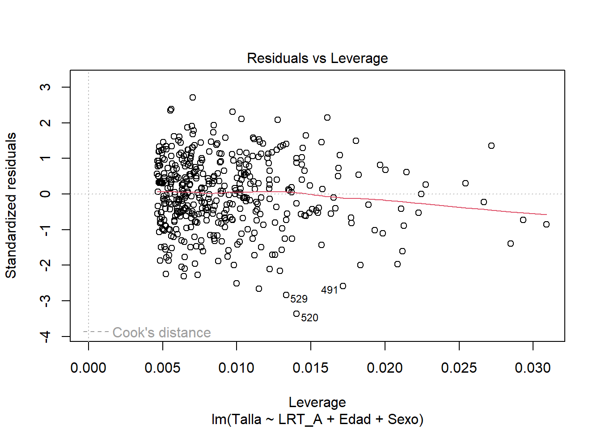

[1] -869.8783 -907.9493 -924.4497 -919.9051 -915.3551 -910.8365Modelos
En esta sección se ajustarán tres tipos de modelos —Normal, LASSO y Gamma— para estimar la talla de adultos mayores en Colombia, utilizando diferentes mediciones: LRT_A, LRT_CM, LRM_R y LRM_90.
La elección de estos modelos se basa en la revisión de la literatura, que indica que las tallas suelen seguir una distribución normal. Además, se incluyen los modelos LASSO y Gamma debido a la naturaleza de la variable respuesta (talla), que es siempre positiva, lo que los hace adecuados para este tipo de datos.
Modelo Normal
LRT Antropómetro
Se hace una búsqueda del mejor modelo normal por cada número de posibles combinaciones de variables de las cuales se tenga evidencia que influyen en la talla de adultos mayores (Edad, Sexo, Etnia y LRT_A). Primero se hará la búsqueda usando todo el conjunto de datos.
A continuación, se muestra el BIC para cada mejor modelo del correspondiente tamaño:
Usando el criterio del BIC, el mejor modelo es el de 3 variables:
[1] 3
Los coeficientes del mejor modelo usando el criterio de BIC son:
(Intercept) LRT_A Edad SexoMasculino
58.8428454 2.1763364 -0.1096942 3.2256625 Esto sugiere usar el modelo \(Talla = 58.84 + 2.17 \cdot LRT\_A - 0.11 \cdot Edad + 3.22 \cdot Sexo\),
\[Sexo = \begin{cases} 1 & \text{si sexo = masculino} \\ 0 & \text{si sexo = femenino} \end{cases}\]
Ahora se usará K - fold cross validation con el fin de calcular directamente los errores de predicción sobre los datos de testeo y evitar así el sobreajuste.
- Se crean K - folds (pliegues) de aproximadamente igual tamaño. En este caso fijamos \(k = 10\). Como tenemos \(543\) datos, cada pliegue será de tamaño 54 o 55.
- El \(k-ésimo\) pliegue servirá para testear, y los demás pliegues se juntan para entrenar los modelos. Osea que se usará un \(90\%\) de los datos para entrenamiento y \(10\%\) para test.
- Para \(k = 1,\cdots,10,\) se calcula el MSE.
- Luego, se promedia el MSE a través de los \(10\) pliegues y se obtiene el MSE promedio.
El MSE para el modelo de 3 variables (\(LRT\_A, Edad, Sexo\)) es:
[1] 10.14466LRT cinta métrica
Se hace una búsqueda del mejor modelo normal por cada número de posibles combinaciones de variables de las cuales se tenga evidencia que influyen en la talla de adultos mayores (Edad, Sexo, Etnia y LRT_CM). Primero se hará la búsqueda usando todo el conjunto de datos.
A continuación, se muestra el BIC para cada mejor modelo del correspondiente tamaño:
[1] -785.0072 -854.2349 -869.3562 -864.2374 -859.6006 -853.6608Usando el criterio BIC, el mejor modelo es el de 3 variables:
[1] 3
Los coeficientes del mejor modelo usando el criterio de BIC son:
(Intercept) LRT_CM Edad SexoMasculino
56.7788743 2.1486596 -0.1131516 4.3001219 Esto sugiere usar el modelo \(Talla = 56.78 + 2.14 \cdot LRT\_CM - 0.11 \cdot Edad + 4.30 \cdot Sexo\),
\[Sexo = \begin{cases} 1 & \text{si sexo = Masculino} \\ 0 & \text{si sexo = Femenino} \end{cases}\]
Ahora usamos nuevamente K - fold cross validation con el fin de calcular directamente los errores de predicción sobre los datos de testeo y evitar así el sobreajuste de la misma manera que se realizó para el modelo normal de \(LRT_A\).
El MSE para el modelo de 3 variables (\(LRT\_CM, Edad, Sexo\)) es:
[1] 11.52624LRM pierna estirada
Se hace una búsqueda del mejor modelo normal por cada número de posibles combinaciones de variables de las cuales se tenga evidencia que influyen en la talla de adultos mayores (Edad, Sexo, Etnia y LRM_R). Primero se hará la búsqueda usando todo el conjunto de datos.
A continuación, se muestra el BIC para cada mejor modelo del correspondiente tamaño:
[1] -770.6371 -814.0382 -823.5290 -818.9141 -814.1528 -810.4009Usando el criterio BIC, el mejor modelo es el de 3 variables:
[1] 3

Los coeficientes del mejor modelo usando el criterio de BIC son:
(Intercept) LRM_R Edad SexoMasculino
67.2117181 2.2173933 -0.1018772 3.7494134 Esto sugiere usar el modelo \(Talla = 67.21 + 2.22 \cdot LRM\_R - 0.10 \cdot Edad + 3.75 \cdot Sexo\),
\[Sexo = \begin{cases} 1 & \text{si sexo = Masculino} \\ 0 & \text{si sexo = Femenino} \end{cases}\]
Nuevamente, se hará la búsqueda del mejor modelo usando K - fold cross validation con el fin de calcular directamente los errores de predicción sobre los datos de testeo y evitar así el sobreajuste.
El MSE para el modelo de 3 variables (\(LRM\_R, Edad, Sexo\)) es:
[1] 12.83537LRM pierna a 90°
Se hace una búsqueda del mejor modelo normal por cada número de posibles combinaciones de variables de las cuales se tenga evidencia que influyen en la talla de adultos mayores (Edad, Sexo, Etnia y LRM_90). Primero se hará la búsqueda usando todo el conjunto de datos.
A continuación, se muestra el BIC para cada mejor modelo del correspondiente tamaño:
[1] -724.1015 -810.4493 -819.5010 -813.7540 -808.3704 -803.4330Usando el criterio BIC, el mejor modelo es el de 3 variables:
[1] 3

Los coeficientes del mejor modelo usando el criterio de BIC son:
(Intercept) LRM_90 Edad SexoMasculino
65.9041633 2.1944725 -0.1008714 4.9118635 Esto sugiere usar el modelo \(Talla = 65.90 + 2.19 \cdot LRM\_90 - 0.10 \cdot Edad + 4.91 \cdot Sexo\),
\[Sexo = \begin{cases} 1 & \text{si sexo = Masculino} \\ 0 & \text{si sexo = Femenino} \end{cases}\]
Ahora se hará la búsqueda del mejor modelo usando K - fold cross validation con el fin de calcular directamente los errores de predicción sobre los datos de testeo y evitar así el sobreajuste.
El MSE para el modelo de 3 variables (\(LRM\_90, Edad, Sexo\)) es:
[1] 12.97915Resúmen modelos Normal
En general, los modelos ajustados incluyeron como variables la edad, el sexo y el intercepto, variando únicamente entre las mediciones utilizadas: LRT_A, LRT_CM, LRM_90 y LRM_R. Cada modelo produjo diferentes estimaciones para los parámetros, lo que resulta en ecuaciones distintas para estimar la talla de los adultos mayores.
El criterio principal para seleccionar el mejor modelo, ya sea normal o de otro tipo, será el menor error cuadrático medio (MSE). Esto se debe a que un MSE más bajo indica que el modelo realiza estimaciones de la talla más cercanas a los valores reales, reflejando una mayor precisión.
La tabla de los errores cuadráticos medios para la regresión lineal simple es la siguiente:
Modelo Medida MSE MSE_validacion
1 Normal LRT_A 10.14466 11.27857
2 Normal LRT_CM 11.52624 13.05033
3 Normal LRM_R 12.83537 13.50163
4 Normal LRM_90 12.97915 13.65316El modelo con menor error cuadrático medio es el que tiene en cuenta la medida LRT con antropómetro:
\[Talla = 58.84 + 2.17 \cdot LRT\_A - 0.11 \cdot Edad + 3.22 \cdot Sexo\]
A continuación, se procederá a validar los supuestos del mejor modelo identificado. Esta validación es crucial, ya que si los supuestos no se cumplen, el modelo no puede considerarse válido y sus resultados podrían no ser confiables.
Call:
lm(formula = Talla ~ LRT_A + Edad + Sexo, data = datos)
Residuals:
Min 1Q Median 3Q Max
-10.6057 -1.9307 0.0574 2.3335 8.5648
Coefficients:
Estimate Std. Error t value Pr(>|t|)
(Intercept) 58.84285 3.15618 18.644 < 2e-16 ***
LRT_A 2.17634 0.05994 36.310 < 2e-16 ***
Edad -0.10969 0.02289 -4.792 2.28e-06 ***
SexoMasculino 3.22566 0.42876 7.523 3.14e-13 ***
---
Signif. codes: 0 '***' 0.001 '**' 0.01 '*' 0.05 '.' 0.1 ' ' 1
Residual standard error: 3.17 on 431 degrees of freedom
Multiple R-squared: 0.8871, Adjusted R-squared: 0.8863
F-statistic: 1129 on 3 and 431 DF, p-value: < 2.2e-16El modelo tiene un \(R^2\) ajustado de \(0.8856\), es decir que aproximadamente un \(88.56\%\) de la variabilidad de la talla es explicada por LRT_A, la edad y el sexo.
Linealidad: Con el fin de verificar que la relación entre la talla y las variables LRT_A (discriminando por sexo) y la edad es lineal, se visualiza el gráfico de los residuos vs los valores predichos del modelo \(\left(\hat{e},\hat{y} \right)\):

El gráfico no muestra ningún patrón marcado, la ubicación de los puntos parece ser aleatoria alrededor de cero, indicando también homoscedasticidad en los residuales y posible independencia de los mismos. El gráfico muestra algunos valores atípicos que valdría la pena explorar.
Independencia de los errores: Aunque nuestros datos no son temporales, el test de Durbin-Watson nos puede ayudar a evaluar la autocorrelación de los errores del modelo:
Durbin-Watson test
data: reg
DW = 2.1354, p-value = 0.9191
alternative hypothesis: true autocorrelation is greater than 0La estadística del test de Durbin-Watson es muy cercano a \(2\), se concluye que los errores son independientes.
Normalidad de los errores: Se realiza el gráfico QQ-plot para comparar la distribución de los residuales del modelo con la distribución teórica de una normal. También se hace el test de normalidad de Lilliefors y Anderson-Darling:

Lilliefors (Kolmogorov-Smirnov) normality test
data: reg$residuals
D = 0.028887, p-value = 0.5079
Anderson-Darling normality test
data: reg$residuals
A = 0.51324, p-value = 0.1926El QQ-plot muestra que los residuales se ajustan aceptablemente a una distribución normal. Las pruebas de normalidad de Lilliefors y Anderson-Darling también apoyan este resultado.
Homoscedasticidad: Aunque no se vio un patron que indicara heteroscedasticidad en el gráfico de los residuales vs los valores predichos, a continuación se muestra el gráfico de los residuales estandarizados vs los valores predichos con el fin de mejorar la interpretabilidad de la homoscedasticidad y tener una visión más clara de las observaciones atípicas e influyentes:
No se observan patrones que indiquen hereroscedasticidad en los residuos (forma de cono o embudo). Se siguien observando algunas observaciones atípicas y/o influyentes.
Adicional, se realiza la prueba de Breusch-Pagan para verificar la homoscedasticidad de los residuales:
studentized Breusch-Pagan test
data: reg
BP = 1.5378, df = 3, p-value = 0.6736No se rechaza la hipótesis nula de que los errores del modelo son homoscedasticos.
Multicolinealidad: Se verifica que las variables incluídas en el modelo no están altamente correlacionadas entre sí, y así evitar obtener resultados inestables que dificulten la interpretabilidad de los coeficientes del modelo. Se calculan los Factores de Inflación de la Varianza (VIFs):
LRT_A Edad Sexo
1.955928 1.034172 1.988986 Dado que los VIFs son mucho menores a 5, esto indica que cada variable tiene una correlación moderada (leve) con las demás. Por lo que se puede concluir que los resultados del modelo posiblemente no estarán muy afectados por la multicolinealidad.
El modelo está bien especificado: Se hace el test de RESET para examinar si el modelo ajustado está bien especificado o si se han omitido términos no lineales o interacciones importantes:
RESET test
data: reg
RESET = 1.0309, df1 = 4, df2 = 427, p-value = 0.3909
RESET test
data: reg
RESET = 0.73692, df1 = 2, df2 = 429, p-value = 0.4792No se rechaza la hipótesis nula de que el modelo está bien especificado.
Observaciones atípicas y de alto apalancamiento:


Usando los residuales estudentizados, se observan \(5\) datos atípicos.

StudRes Hat CookD
25 -0.7292660 0.02933562 0.004022631
491 -2.6083060 0.01716950 0.029317535
520 -3.4102219 0.01403516 0.040390587
529 -2.8640783 0.01333301 0.027256453
538 -0.8522359 0.03089114 0.005791578En total 29 observaciones superan el umbral especificado para la distancia de Cook, pero esto no significa que todas sean influyentes (alto leverage). Particularmente hay 3 observaciones que son marcadas como influyentes significativamente según la distancia de Cook. Esto indica que la inclusión de estas observaciones en el modelo pueden tener una influencia significativa en los coeficientes del modelo y en la predicción de la talla. Se debe explorar con cautela estas observaciones y decidir qué hacer con ellas.
Para esto, se puede comprobar el cambio en los coeficientes del modelo al excluir estas observaciones influyentes.
Call:
lm(formula = Talla ~ LRT_A + Edad + Sexo, data = datos, subset = {
setdiff(row(datos)[, 1], c(533, 43, 549))
})
Residuals:
Min 1Q Median 3Q Max
-10.6058 -1.9277 0.0483 2.3297 8.5671
Coefficients:
Estimate Std. Error t value Pr(>|t|)
(Intercept) 58.96460 3.16648 18.622 < 2e-16 ***
LRT_A 2.17491 0.06004 36.224 < 2e-16 ***
Edad -0.11051 0.02296 -4.813 2.06e-06 ***
SexoMasculino 3.22663 0.42911 7.519 3.24e-13 ***
---
Signif. codes: 0 '***' 0.001 '**' 0.01 '*' 0.05 '.' 0.1 ' ' 1
Residual standard error: 3.173 on 430 degrees of freedom
Multiple R-squared: 0.8867, Adjusted R-squared: 0.8859
F-statistic: 1122 on 3 and 430 DF, p-value: < 2.2e-16Las estimaciones de los coeficientes del modelo sin las obervaciones influyentes han cambiado un poco respecto al modelo original. El \(R^2\) ajustado ha incrementado un poco también.
Modelo Lasso
LRT Antropómetro
Para ajustar el modelo LASSO, se consideran todas las variables que podrían influir en la estimación de la talla: Edad, Sexo, Etnia y LRT_A. El modelo se encargará automáticamente de seleccionar las variables más significativas.
Se utiliza el método de k-fold cross validation con \(k = 10\) usando los mismos folds utilizados en el modelo normal para que las métricas sean comparables. El objetivo principal de la validación cruzada en el modelo LASSO es obtener el valor de \(\lambda\) que minimice el error cuadrático medio cruzado a través de los 10 folds. Es decir, se busca el valor de \(\lambda\) que minimice el MSE a través de los 10 folds (lo mismo que en el modelo normal).
El modelo LASSO ajusta los coeficientes de las variables, llevando a cero aquellos que no son significativos. Además, determina de forma óptima el parámetro lambda que controla la penalización y selección de variables.
Se ajusta el modelo en cada fold usando cv.glmnet:
El valor de \(\lambda\) óptimo y el MSE del modelo ajustado con ese valor de \(\lambda\) son respectivamente:
[1] "Valor de lambda óptimo: 0.099"[1] "MSE: 10.186"Los coeficientes resultantes del modelo ajustado son:
7 x 1 sparse Matrix of class "dgCMatrix"
s1
(Intercept) 58.49212479
LRT_A 2.15790258
Edad -0.09165771
SexoMasculino 3.07058891
EtniaBlanco-Mestizo .
EtniaIndigena 0.87257838
EtniaRrom . Finalmente, la ecuación propuesta por este modelo para estimar la talla en adultos mayores es:
\[Talla = 58.49 + 2.16 \cdot LRT\_A - 0.09 \cdot Edad + 3.07 \cdot Sexo + 0.87 \cdot Ind\] \[Sexo = \begin{cases} 1 & \text{si sexo = Masculino} \\ 0 & \text{si sexo = Femenino} \end{cases}\]
\[Ind = \begin{cases} 1 & \text{si Etnia = Indígena} \\ 0 & \text{en otro caso} \end{cases}\]
LRT cinta métrica
Para ajustar el modelo LASSO, se consideran todas las variables que podrían influir en la estimación de la talla: Edad, Sexo, Etnia y LRT_CM. El modelo se encargará automáticamente de seleccionar las variables más significativas.
Se utiliza el método de k-fold cross validation con \(k = 10\) usando los mismos folds utilizados en el modelo normal para que las métricas sean comparables. El objetivo principal de la validación cruzada en el modelo LASSO es obtener el valor de \(\lambda\) que minimice el error cuadrático medio cruzado a través de los 10 folds. Es decir, se busca el valor de \(\lambda\) que minimice el MSE a través de los 10 folds (lo mismo que en el modelo normal).
El modelo LASSO ajusta los coeficientes de las variables, llevando a cero aquellos que no son significativos. Además, determina de forma óptima el parámetro lambda que controla la penalización y selección de variables.
Se ajusta el modelo en cada fold usando cv.glmnet:

El valor de \(\lambda\) óptimo y el MSE del modelo ajustado con ese valor de \(\lambda\) son respectivamente:
[1] "Valor de lambda óptimo: 0.008"[1] "MSE: 11.542"Los coeficientes resultantes del modelo ajustado son:
7 x 1 sparse Matrix of class "dgCMatrix"
s1
(Intercept) 55.0472932
LRT_CM 2.1472901
Edad -0.1131422
SexoMasculino 4.3041272
EtniaBlanco-Mestizo 1.7987785
EtniaIndigena 3.1804166
EtniaRrom 0.9271863Finalmente, la ecuación propuesta por este modelo para estimar la talla en adultos mayores es:
\[Talla = 55.04 + 2.15 \cdot LRT\_CM - 0.11 \cdot Edad + 4.30 \cdot Sexo + 1.79 \cdot BM + 3.18 \cdot Ind + 0.93 \cdot Rrom\]
\[Sexo = \begin{cases} 1 & \text{si sexo = Masculino} \\ 0 & \text{si sexo = Femenino} \end{cases}\]
\[BM = \begin{cases} 1 & \text{si Etnia = Blanco-Mestizo} \\ 0 & \text{en otro caso} \end{cases}\] \[Ind = \begin{cases} 1 & \text{si Etnia = Indígena} \\ 0 & \text{en otro caso} \end{cases}\] \[Rrom = \begin{cases} 1 & \text{si Etnia = Rrom} \\ 0 & \text{en otro caso} \end{cases}\]
LRM pierna estirada
Para ajustar el modelo LASSO, se consideran todas las variables que podrían influir en la estimación de la talla: Edad, Sexo, Etnia y LRM_R. El modelo se encargará automáticamente de seleccionar las variables más significativas.
Se utiliza el método de k-fold cross validation con \(k = 10\) usando los mismos folds utilizados en el modelo normal para que las métricas sean comparables. El objetivo principal de la validación cruzada en el modelo LASSO es obtener el valor de \(\lambda\) que minimice el error cuadrático medio cruzado a través de los 10 folds. Es decir, se busca el valor de \(\lambda\) que minimice el MSE a través de los 10 folds (lo mismo que en el modelo normal).
El modelo LASSO ajusta los coeficientes de las variables, llevando a cero aquellos que no son significativos. Además, determina de forma óptima el parámetro lambda que controla la penalización y selección de variables.
Se ajusta el modelo en cada fold usando cv.glmnet:

El valor de \(\lambda\) óptimo y el MSE del modelo ajustado con ese valor de \(\lambda\) son respectivamente:
[1] "Valor de lambda óptimo: 0.005"[1] "MSE: 12.828"Los coeficientes resultantes del modelo ajustado son:
7 x 1 sparse Matrix of class "dgCMatrix"
s1
(Intercept) 64.530104
LRM_R 2.216361
Edad -0.103810
SexoMasculino 3.753767
EtniaBlanco-Mestizo 2.860621
EtniaIndigena 4.717920
EtniaRrom 5.746844Finalmente, la ecuación propuesta por este modelo para estimar la talla en adultos mayores es:
\[Talla = 64.53 + 2.22 \cdot LRM\_R - 0.10 \cdot Edad + 3.75 \cdot Sexo + 2.86 \cdot BM + 4.72 \cdot Ind + 5.75 \cdot Rrom\]
\[Sexo = \begin{cases} 1 & \text{si sexo = Masculino} \\ 0 & \text{si sexo = Femenino} \end{cases}\]
\[BM = \begin{cases} 1 & \text{si Etnia = Blanco-Mestizo} \\ 0 & \text{en otro caso} \end{cases}\]
\[Ind = \begin{cases} 1 & \text{si Etnia = Indigena} \\ 0 & \text{en otro caso} \end{cases}\]
\[Rrom = \begin{cases} 1 & \text{si Etnia = Rrom} \\ 0 & \text{en otro caso} \end{cases}\]
LRM pierna a 90°
Para ajustar el modelo LASSO, se consideran todas las variables que podrían influir en la estimación de la talla: Edad, Sexo, Etnia y LRM_90. El modelo se encargará automáticamente de seleccionar las variables más significativas.
Se utiliza el método de k-fold cross validation con \(k = 10\) usando los mismos folds utilizados en el modelo normal para que las métricas sean comparables. El objetivo principal de la validación cruzada en el modelo LASSO es obtener el valor de \(\lambda\) que minimice el error cuadrático medio cruzado a través de los 10 folds. Es decir, se busca el valor de \(\lambda\) que minimice el MSE a través de los 10 folds (lo mismo que en el modelo normal).
El modelo LASSO ajusta los coeficientes de las variables, llevando a cero aquellos que no son significativos. Además, determina de forma óptima el parámetro lambda que controla la penalización y selección de variables.
Se ajusta el modelo en cada fold usando cv.glmnet:

El valor de \(\lambda\) óptimo y el MSE del modelo ajustado con ese valor de \(\lambda\) son respectivamente:
[1] "Valor de lambda óptimo: 0.077"[1] "MSE: 13.005"Los coeficientes resultantes del modelo ajustado son:
7 x 1 sparse Matrix of class "dgCMatrix"
s1
(Intercept) 65.62591887
LRM_90 2.17921716
Edad -0.08695065
SexoMasculino 4.78312097
EtniaBlanco-Mestizo .
EtniaIndigena 0.19566037
EtniaRrom 0.51369340Finalmente, la ecuación propuesta por este modelo para estimar la talla en adultos mayores es:
\[Talla = 65.62 + 2.18 \cdot LRM\_90 - 0.09 \cdot Edad + 4.78 \cdot Sexo + 0.19 \cdot Ind + 0.51 \cdot Rrom\]
\[Sexo = \begin{cases} 1 & \text{si sexo = Masculino} \\ 0 & \text{si sexo = Femenino} \end{cases}\]
\[Ind = \begin{cases} 1 & \text{si Etnia = Indígena} \\ 0 & \text{en otro caso} \end{cases}\]
\[Rrom = \begin{cases} 1 & \text{si Etnia = Rrom} \\ 0 & \text{en otro caso} \end{cases}\]
Resumen modelos LASSO
En general, los modelos ajustados incluyeron más variables que las tres del modelo normal (edad, sexo y mediciones). Cada modelo produjo diferentes estimaciones para los parámetros, lo que resulta en ecuaciones distintas para estimar la talla de los adultos mayores.
Nuevamente, es preferible el modelo LASSO que tenga menor error cuadrático medio. Y en general, es preferible el modelo (normal o LASSO) que tenga menor MSE.
La tabla de los errores cuadráticos medios de los modelos ajustados hasta el momento es:
Modelo Medida MSE MSE_validacion
5 LASSO LRT_A 10.18571 11.41032
6 LASSO LRT_CM 11.54195 13.02483
7 LASSO LRM_R 12.82789 13.53493
8 LASSO LRM_90 13.00511 13.81053El modelo normal con LRT_A sigue siendo el mejor, ya que hasta el momento es el que presenta el menor MSE. Por lo tanto, no se procederá a verificar los supuestos para ninguno de los modelos LASSO, dado que el modelo normal continúa siendo superior.
Modelo Gamma
LRT Antropómetro
Inicialmente, se ajusta el modelo Gamma que incluye a todas las variables regresoras que se cree influyen en la estimación de la talla.
Call:
glm(formula = Talla ~ LRT_A + Edad + Etnia + Sexo, family = Gamma(),
data = datos)
Coefficients:
Estimate Std. Error t value Pr(>|t|)
(Intercept) 1.046e-02 1.487e-04 70.307 < 2e-16 ***
LRT_A -8.778e-05 2.517e-06 -34.880 < 2e-16 ***
Edad 4.542e-06 9.714e-07 4.676 3.93e-06 ***
EtniaBlanco-Mestizo -1.134e-04 6.586e-05 -1.721 0.0859 .
EtniaIndigena -1.862e-04 8.716e-05 -2.137 0.0332 *
EtniaRrom -1.647e-04 1.396e-04 -1.180 0.2387
SexoMasculino -1.378e-04 1.817e-05 -7.587 2.06e-13 ***
---
Signif. codes: 0 '***' 0.001 '**' 0.01 '*' 0.05 '.' 0.1 ' ' 1
(Dispersion parameter for Gamma family taken to be 0.0004379319)
Null deviance: 1.57735 on 434 degrees of freedom
Residual deviance: 0.18837 on 428 degrees of freedom
AIC: 2274.7
Number of Fisher Scoring iterations: 3A continuación se realiza una selección de variables con el método “forward” de tal forma que se minimice el AIC. El modelo seleccionado resulta ser el que incluye Edad, Sexo y LRT_A.
Start: AIC=3187.34
Talla ~ 1
Df Deviance AIC
+ LRT_A 1 0.22113 2814.8
+ Sexo 1 0.73444 2956.6
<none> 1.57735 3187.3
+ Edad 1 1.57197 3187.9
+ Etnia 3 1.56020 3188.6
Step: AIC=2334.45
Talla ~ LRT_A
Df Deviance AIC
+ Sexo 1 0.19960 2294.1
+ Edad 1 0.21541 2325.2
<none> 0.22113 2334.4
+ Etnia 3 0.21965 2337.5
Step: AIC=2291.88
Talla ~ LRT_A + Sexo
Df Deviance AIC
+ Edad 1 0.19048 2274.0
<none> 0.19960 2291.9
+ Etnia 3 0.19796 2294.3
Step: AIC=2273.53
Talla ~ LRT_A + Sexo + Edad
Df Deviance AIC
<none> 0.19048 2273.5
+ Etnia 3 0.18837 2274.7Los coeficientes del modelo son
Call:
glm(formula = Talla ~ LRT_A + Edad + Sexo, family = Gamma(),
data = datos)
Coefficients:
Estimate Std. Error t value Pr(>|t|)
(Intercept) 1.035e-02 1.332e-04 77.730 < 2e-16 ***
LRT_A -8.776e-05 2.512e-06 -34.932 < 2e-16 ***
Edad 4.417e-06 9.704e-07 4.552 6.93e-06 ***
SexoMasculino -1.370e-04 1.820e-05 -7.531 2.98e-13 ***
---
Signif. codes: 0 '***' 0.001 '**' 0.01 '*' 0.05 '.' 0.1 ' ' 1
(Dispersion parameter for Gamma family taken to be 0.0004397181)
Null deviance: 1.57735 on 434 degrees of freedom
Residual deviance: 0.19047 on 431 degrees of freedom
AIC: 2273.5
Number of Fisher Scoring iterations: 3Entonces, la ecuación propuesta por este modelo para estimar el logaritmo de la talla en adultos mayores es:
\[\ln(Talla) = 0.01035 - 0.00008776 \cdot LRT\_A + 0.000004417 \cdot Edad - 0.0001370 \cdot Sexo\]
\[Sexo = \begin{cases} 1 & \text{si sexo = Masculino} \\ 0 & \text{si sexo = Femenino} \end{cases}\]
Se utiliza el método dek-fold cross validation con \(k = 10\) y y se calcula el promedio del MSE obtenido en cada iteración. El MSE para este modelo es:
[1] 10.6452LRT cinta métrica
Inicialmente, se ajusta el modelo Gamma que incluye a todas las variables regresoras que se cree influyen en la estimación de la talla.
Call:
glm(formula = Talla ~ LRT_CM + Edad + Etnia + Sexo, family = Gamma(),
data = datos)
Coefficients:
Estimate Std. Error t value Pr(>|t|)
(Intercept) 1.054e-02 1.623e-04 64.925 < 2e-16 ***
LRT_CM -8.687e-05 2.709e-06 -32.067 < 2e-16 ***
Edad 4.592e-06 1.031e-06 4.456 1.07e-05 ***
EtniaBlanco-Mestizo -9.189e-05 6.994e-05 -1.314 0.190
EtniaIndigena -1.509e-04 9.259e-05 -1.630 0.104
EtniaRrom -4.257e-05 1.484e-04 -0.287 0.774
SexoMasculino -1.805e-04 1.861e-05 -9.697 < 2e-16 ***
---
Signif. codes: 0 '***' 0.001 '**' 0.01 '*' 0.05 '.' 0.1 ' ' 1
(Dispersion parameter for Gamma family taken to be 0.0004942473)
Null deviance: 1.5774 on 434 degrees of freedom
Residual deviance: 0.2122 on 428 degrees of freedom
AIC: 2326.5
Number of Fisher Scoring iterations: 3A continuación se realiza una selección de variables con el método “forward” de tal forma que se minimice el AIC. El modelo seleccionado resulta ser el que incluye Edad, Sexo y LRT_A.
Start: AIC=3187.34
Talla ~ 1
Df Deviance AIC
+ LRT_CM 1 0.26454 2826.8
+ Sexo 1 0.73444 2956.6
<none> 1.57735 3187.3
+ Edad 1 1.57197 3187.9
+ Etnia 3 1.56020 3188.6
Step: AIC=2412.42
Talla ~ LRT_CM
Df Deviance AIC
+ Sexo 1 0.22310 2346.6
+ Edad 1 0.25969 2406.5
<none> 0.26454 2412.4
+ Etnia 3 0.26369 2417.0
Step: AIC=2340.3
Talla ~ LRT_CM + Sexo
Df Deviance AIC
+ Edad 1 0.21359 2323.8
<none> 0.22310 2340.3
+ Etnia 3 0.22202 2344.2
Step: AIC=2323.36
Talla ~ LRT_CM + Sexo + Edad
Df Deviance AIC
<none> 0.21359 2323.4
+ Etnia 3 0.21219 2326.5Los coeficientes del modelo son
Call:
glm(formula = Talla ~ LRT_CM + Edad + Sexo, family = Gamma(),
data = datos)
Coefficients:
Estimate Std. Error t value Pr(>|t|)
(Intercept) 1.045e-02 1.461e-04 71.520 < 2e-16 ***
LRT_CM -8.680e-05 2.694e-06 -32.214 < 2e-16 ***
Edad 4.502e-06 1.027e-06 4.383 1.47e-05 ***
SexoMasculino -1.797e-04 1.860e-05 -9.661 < 2e-16 ***
---
Signif. codes: 0 '***' 0.001 '**' 0.01 '*' 0.05 '.' 0.1 ' ' 1
(Dispersion parameter for Gamma family taken to be 0.0004940556)
Null deviance: 1.57735 on 434 degrees of freedom
Residual deviance: 0.21359 on 431 degrees of freedom
AIC: 2323.4
Number of Fisher Scoring iterations: 3Entonces, la ecuación propuesta por este modelo para estimar el logaritmo de la talla en adultos mayores es:
\[\ln(Talla) = 0.01045 - 0.00008680 \cdot LRT\_CM + 0.000004502 \cdot Edad - 0.0001797 \cdot Sexo\]
\[Sexo = \begin{cases} 1 & \text{si sexo = Masculino} \\ 0 & \text{si sexo = Femenino} \end{cases}\]
Se utiliza el método dek-fold cross validation con \(k = 10\) y y se calcula el promedio del MSE obtenido en cada iteración. El MSE para este modelo es:
[1] 11.86227LRM pierna estirada
Inicialmente, se ajusta el modelo Gamma que incluye a todas las variables regresoras que se cree influyen en la estimación de la talla.
Call:
glm(formula = Talla ~ LRM_R + Edad + Etnia + Sexo, family = Gamma(),
data = datos)
Coefficients:
Estimate Std. Error t value Pr(>|t|)
(Intercept) 1.014e-02 1.618e-04 62.706 < 2e-16 ***
LRM_R -8.963e-05 2.985e-06 -30.027 < 2e-16 ***
Edad 4.255e-06 1.080e-06 3.941 9.47e-05 ***
EtniaBlanco-Mestizo -1.327e-04 7.323e-05 -1.811 0.0708 .
EtniaIndigena -2.077e-04 9.686e-05 -2.144 0.0326 *
EtniaRrom -2.324e-04 1.551e-04 -1.498 0.1349
SexoMasculino -1.583e-04 2.015e-05 -7.860 3.16e-14 ***
---
Signif. codes: 0 '***' 0.001 '**' 0.01 '*' 0.05 '.' 0.1 ' ' 1
(Dispersion parameter for Gamma family taken to be 0.0005409435)
Null deviance: 1.57735 on 434 degrees of freedom
Residual deviance: 0.23282 on 428 degrees of freedom
AIC: 2366.9
Number of Fisher Scoring iterations: 3A continuación se realiza una selección de variables con el método “forward” de tal forma que se minimice el AIC. El modelo seleccionado resulta ser el que incluye Edad, Sexo y LRT_A.
Start: AIC=3187.34
Talla ~ 1
Df Deviance AIC
+ LRM_R 1 0.27302 2829.1
+ Sexo 1 0.73444 2956.6
<none> 1.57735 3187.3
+ Edad 1 1.57197 3187.9
+ Etnia 3 1.56020 3188.6
Step: AIC=2426.15
Talla ~ LRM_R
Df Deviance AIC
+ Sexo 1 0.24354 2381.3
+ Edad 1 0.26889 2421.6
<none> 0.27302 2426.2
+ Etnia 3 0.27075 2428.6
Step: AIC=2378.44
Talla ~ LRM_R + Sexo
Df Deviance AIC
+ Edad 1 0.23567 2366.4
<none> 0.24354 2378.4
+ Etnia 3 0.24124 2380.3
Step: AIC=2366.15
Talla ~ LRM_R + Sexo + Edad
Df Deviance AIC
<none> 0.23567 2366.2
+ Etnia 3 0.23282 2366.9Los coeficientes del modelo son
Call:
glm(formula = Talla ~ LRM_R + Edad + Sexo, family = Gamma(),
data = datos)
Coefficients:
Estimate Std. Error t value Pr(>|t|)
(Intercept) 1.002e-02 1.436e-04 69.770 < 2e-16 ***
LRM_R -8.954e-05 2.980e-06 -30.045 < 2e-16 ***
Edad 4.103e-06 1.079e-06 3.802 0.000164 ***
SexoMasculino -1.579e-04 2.019e-05 -7.819 4.14e-14 ***
---
Signif. codes: 0 '***' 0.001 '**' 0.01 '*' 0.05 '.' 0.1 ' ' 1
(Dispersion parameter for Gamma family taken to be 0.0005437082)
Null deviance: 1.57735 on 434 degrees of freedom
Residual deviance: 0.23567 on 431 degrees of freedom
AIC: 2366.2
Number of Fisher Scoring iterations: 3Entonces, la ecuación propuesta por este modelo para estimar el logaritmo de la talla en adultos mayores es:
\[\ln(Talla) = 0.01002 - 0.00008954 \cdot LRM\_R + 0.000004103 \cdot Edad - 0.0001579 \cdot Sexo\]
\[Sexo = \begin{cases} 1 & \text{si sexo = Masculino} \\ 0 & \text{si sexo = Femenino} \end{cases}\]
Se utiliza el método dek-fold cross validation con \(k = 10\) y y se calcula el promedio del MSE obtenido en cada iteración. El MSE para este modelo es:
[1] 13.1695LRM pierna 90°
Inicialmente, se ajusta el modelo Gamma que incluye a todas las variables regresoras que se cree influyen en la estimación de la talla.
Call:
glm(formula = Talla ~ LRM_90 + Edad + Etnia + Sexo, family = Gamma(),
data = datos)
Coefficients:
Estimate Std. Error t value Pr(>|t|)
(Intercept) 1.018e-02 1.641e-04 62.017 < 2e-16 ***
LRM_90 -8.885e-05 2.989e-06 -29.728 < 2e-16 ***
Edad 4.076e-06 1.087e-06 3.749 0.000202 ***
EtniaBlanco-Mestizo -9.746e-05 7.367e-05 -1.323 0.186574
EtniaIndigena -1.293e-04 9.752e-05 -1.326 0.185459
EtniaRrom -1.580e-04 1.562e-04 -1.012 0.312337
SexoMasculino -2.046e-04 1.927e-05 -10.619 < 2e-16 ***
---
Signif. codes: 0 '***' 0.001 '**' 0.01 '*' 0.05 '.' 0.1 ' ' 1
(Dispersion parameter for Gamma family taken to be 0.0005481876)
Null deviance: 1.57735 on 434 degrees of freedom
Residual deviance: 0.23564 on 428 degrees of freedom
AIC: 2372.1
Number of Fisher Scoring iterations: 3A continuación se realiza una selección de variables con el método “forward” de tal forma que se minimice el AIC. El modelo seleccionado resulta ser el que incluye Edad, Sexo y LRT_A.
Start: AIC=3187.34
Talla ~ 1
Df Deviance AIC
+ LRM_90 1 0.30077 2836.8
+ Sexo 1 0.73444 2956.6
<none> 1.57735 3187.3
+ Edad 1 1.57197 3187.9
+ Etnia 3 1.56020 3188.6
Step: AIC=2468.26
Talla ~ LRM_90
Df Deviance AIC
+ Sexo 1 0.24419 2388.7
+ Edad 1 0.29828 2466.7
<none> 0.30077 2468.3
+ Etnia 3 0.30011 2473.3
Step: AIC=2379.61
Talla ~ LRM_90 + Sexo
Df Deviance AIC
+ Edad 1 0.23686 2368.6
<none> 0.24419 2379.6
+ Etnia 3 0.24335 2384.1
Step: AIC=2368.33
Talla ~ LRM_90 + Sexo + Edad
Df Deviance AIC
<none> 0.23686 2368.3
+ Etnia 3 0.23564 2372.1Los coeficientes del modelo son
Call:
glm(formula = Talla ~ LRM_90 + Edad + Sexo, family = Gamma(),
data = datos)
Coefficients:
Estimate Std. Error t value Pr(>|t|)
(Intercept) 1.009e-02 1.463e-04 68.96 < 2e-16 ***
LRM_90 -8.884e-05 2.972e-06 -29.90 < 2e-16 ***
Edad 3.964e-06 1.083e-06 3.66 0.000284 ***
SexoMasculino -2.038e-04 1.924e-05 -10.60 < 2e-16 ***
---
Signif. codes: 0 '***' 0.001 '**' 0.01 '*' 0.05 '.' 0.1 ' ' 1
(Dispersion parameter for Gamma family taken to be 0.0005471928)
Null deviance: 1.57735 on 434 degrees of freedom
Residual deviance: 0.23686 on 431 degrees of freedom
AIC: 2368.3
Number of Fisher Scoring iterations: 3Entonces, la ecuación propuesta por este modelo para estimar el logaritmo de la talla en adultos mayores es:
\[\ln(Talla) = 0.01009 - 0.00008884 \cdot LRT\_A + 0.000003964 \cdot Edad - 0.0002038 \cdot Sexo\]
\[Sexo = \begin{cases} 1 & \text{si sexo = Masculino} \\ 0 & \text{si sexo = Femenino} \end{cases}\]
Se utiliza el método dek-fold cross validation con \(k = 10\) y y se calcula el promedio del MSE obtenido en cada iteración. El MSE para este modelo es:
[1] 13.19002Resumen modelos Gamma
En general, los modelos Gamma ajustados incluyeron las mismas tres variables del modelo normal (edad, sexo y mediciones). Cada modelo produjo diferentes estimaciones para los parámetros, lo que resulta en ecuaciones distintas para estimar la talla de los adultos mayores.
De nuevo, es preferible el modelo Gamma que tenga menor error cuadrático medio. Y en general, es preferible el modelo (normal, LASSO o Gamma) que tenga menor MSE.
La tabla de los errores cuadráticos medios de los modelos ajustados hasta el momento es:
Modelo Medida MSE MSE_validacion
1 Normal LRT_A 10.14466 11.27857
2 Normal LRT_CM 11.52624 13.05033
3 Normal LRM_R 12.83537 13.50163
4 Normal LRM_90 12.97915 13.65316
5 LASSO LRT_A 10.18571 11.41032
6 LASSO LRT_CM 11.54195 13.02483
7 LASSO LRM_R 12.82789 13.53493
8 LASSO LRM_90 13.00511 13.81053
9 Gamma LRT_A 10.64520 12.42071
10 Gamma LRT_CM 11.86227 14.01769
11 Gamma LRM_R 13.16950 14.19875
12 Gamma LRM_90 13.19002 14.47528El modelo normal con LRT_A sigue siendo el mejor, ya que hasta el momento es el que presenta el menor MSE. Por lo tanto, no se procederá a verificar los supuestos para ninguno de los modelos Gamma, dado que el modelo normal continúa siendo superior.
Propuesta: Nuevas fórmulas
Dado que el modelo ajustado con menor error cuadrático medio es el normal con LRT con antropómetro, la fórmula que se propone en esta investigación para realizar la estimación de la talla de adultos mayores en Colombia es
\[Talla = 58.84 + 2.17 \cdot LRT\_A - 0.11 \cdot Edad + 3.22 \cdot Sexo\]
\[Sexo = \begin{cases} 1 & \text{si sexo = masculino} \\ 0 & \text{si sexo = femenino} \end{cases}\]
Que también puede verse como dos fórmulas, una para cada sexo:
- Sexo masculino: \(Talla = 62.06 + 2.17 LRT\_A - 0.11 Edad\), la interpretación de cada parámetro es:
- Intercepto: Suponiendo el caso hipotético en que un adulto mayor tenga \(LRT\_A = 0\) y \(Edad = 0\), entonces la talla estimada para ese adulto mayor de sexo masculino es \(62.06\) centímetros.
- LRT_A: Por cada centímetro adicional que mida la LRT_A del adulto mayor masculino, entonces la estimación de su talla aumenta \(2.17\) centímetros.
- Edad: Por cada año cumplido adicional que tenga el adulto mayor de sexo masculino, la estimación de su talla disminuye \(0.11\) centímetros.
- Sexo femenino: \(Talla = 58.84 + 2.17 LRT\_A - 0.11 Edad\), la interpretación de cada parámetro es:
- Intercepto: Suponiendo el caso hipotético en que un adulto mayor tenga \(LRT\_A = 0\) y \(Edad = 0\), entonces la talla estimada para ese adulto mayor de sexo femenino es \(58.84\) centímetros.
- LRT_A: Por cada centímetro adicional que mida la LRT_A del adulto mayor femenino, entonces la estimación de su talla aumenta \(2.17\) centímetros.
- Edad: Por cada año cumplido adicional que tenga el adulto mayor de sexo femenino, la estimación de su talla disminuye \(0.11\) centímetros.
Fórmulas Benjumea
Se calculan las estimaciones de las tallas a partir de las fórmulas de Benjumea, esto para compararlas con las estimaciones de la fórmula propuesta en esta investigación.
Las fórmulas de Benjumea son:
Indígena masculino: \(82.695 + 1.745 LRT_A - 0.121 Edad\)
Indígena femenino: \(90.281 + 1.436 LRT_A - 0.102 Edad\)
Afrodescendiente masculino: \(9.298 + 1.855 LRT_A - 0.141 Edad\)
Afrodescendiente femenino: \(76.233 + 1.767 LRT_A - 0.098 Edad\)
Blanco-Mestizo masculino: \(75.514 + 1.883 LRT_A - 0.108 Edad\)
Blanco-Mestizo femenino: \(86.497 + 1.553 LRT_A - 0.119 Edad\)
Cabe resaltar que no existe fórmula para la etnia Rrom, por lo que hubo un individuo en la muestra a quien no fue posible realizar la estimación por medio de las fórmulas de Benjumea.
LRT Antropómetro
Las fórmulas de Benjumea tienen en cuenta la medición LRT. El error cuadrático medio de las fórmulas de Benjumea con LRT_A es
[1] 12.69694LRT cinta métrica
Las fórmulas de Benjumea tienen en cuenta la medición LRT. El error cuadrático medio de las fórmulas de Benjumea con LRT_CM es
[1] 14.24937Resumen fórmulas Benjumea
La tabla de los errores cuadráticos medios con las fórmulas de Benjumea es:
Modelo Medida MSE MSE_validacion
13 Benjumea LRT_A 12.69694 13.76484
14 Benjumea LRT_CM 14.24937 16.95772Los MSE son mayores a los modelos ajustados anteriormente.
Fórmulas Arango y Zamora
Se calculan las estimaciones de las tallas a partir de las fórmulas de Arango y Zamora, esto para compararlas con las estimaciones de la fórmula propuesta en esta investigación.
Las fórmulas de Arango y Zamora son:
- Sexo masculino: \(119.6 + 1.121 LRM_R - 0.117 Edad\)
- Sexo femenino: \(107.7 + 1.263 LRM_R - 0.159 Edad\)
LRM pierna estirada
Las fórmulas de Arango y Zamora tienen en cuenta la medición LRM. El error cuadrático medio de las fórmulas de Arango y Zamora con LRM_R es
[1] 22.18134LRM pierna a 90°
Las fórmulas de Arango y Zamora tienen en cuenta la medición LRM. El error cuadrático medio de las fórmulas de Arango y Zamora con LRM_90 es
[1] 19.60496Resumen fórmulas Arango y Zamora
La tabla de los errores cuadráticos medios con las fórmulas de Benjumea es:
Modelo Medida MSE MSE_validacion
15 Arango, Zamora LRM_R 22.18134 22.03581
16 Arango, Zamora LRM_90 19.60496 21.49090Los MSE son mayores a los modelos ajustados anteriormente.
Conclusión
A continuación, se muestra la tabla de los MSE de todos los modelos ajustados en la investigación y de las fórmulas de Benjumea y de Arango y Zamora.
Modelo Medida MSE MSE_validacion
1 Normal LRT_A 10.14466 11.27857
2 Normal LRT_CM 11.52624 13.05033
3 Normal LRM_R 12.83537 13.50163
4 Normal LRM_90 12.97915 13.65316
5 LASSO LRT_A 10.18571 11.41032
6 LASSO LRT_CM 11.54195 13.02483
7 LASSO LRM_R 12.82789 13.53493
8 LASSO LRM_90 13.00511 13.81053
9 Gamma LRT_A 10.64520 12.42071
10 Gamma LRT_CM 11.86227 14.01769
11 Gamma LRM_R 13.16950 14.19875
12 Gamma LRM_90 13.19002 14.47528
13 Benjumea LRT_A 12.69694 13.76484
14 Benjumea LRT_CM 14.24937 16.95772
15 Arango, Zamora LRM_R 22.18134 22.03581
16 Arango, Zamora LRM_90 19.60496 21.49090Se observa que el modelo que presenta menor MSE es el modelo normal con LRT con antropómetro, de modo que, se concluye que este es el mejor modelo pues sus estimaciones de la talla son más cercanas a la verdadera talla del adulto mayor.
Note
Por lo que las fórmulas que mejor estiman la talla de los adultos mayores en Colombia, según la base de datos analizada, son:
\[Talla = 58.84 + 2.17 \cdot LRT\_A - 0.11 \cdot Edad + 3.22 \cdot Sexo\]
\[Sexo = \begin{cases} 1 & \text{si sexo = masculino} \\ 0 & \text{si sexo = femenino} \end{cases}\]
Comportamiento de las variables de interés por subgrupos
A continuación se mestra un resumen de las variables Edad, Talla, LRT_A y LRT_CM para cada subgrupo (femenino o masculino) de la muestra. Dentro de las medidas de resumen se encuentran tamaño de la muestra (\(n\)), mínimo, máximo, promedio, desviación estándar (DesEst) y mediana del grupo de datos con el que se ajustaron los modelos, además, estas mismas mediciones para el grupo de datos con el que se vaidaron los modelos (n_val, Minimo_val, Maximo_val, Promedio_val, DesEst_val, Mediana_val), y también el valor p (P_valor) de la prueba de independencia U de Mann-Whitney para Edad, o de la prueba \(t\) de independencia para Talla, LRT_A y LRT_CM.
Sexo femenino
| Variable | n | Minimo | Maximo | Promedio | DesEst | Mediana | n_val | Minimo_val | Maximo_val | Promedio_val | DesEst_val | Mediana_val | P_valor |
|---|---|---|---|---|---|---|---|---|---|---|---|---|---|
| Edad | 218 | 60.00 | 88.00 | 70.63761 | 6.545260 | 70.000 | 54 | 60.00 | 95.0 | 70.29630 | 7.223206 | 68.500 | 0.5087940 |
| Talla | 218 | 127.10 | 163.65 | 149.37936 | 6.063146 | 149.575 | 54 | 132.55 | 162.1 | 148.97963 | 6.549366 | 149.325 | 0.6848868 |
| LRT_A | 218 | 36.85 | 50.55 | 45.16078 | 2.384959 | 45.200 | 54 | 38.20 | 49.8 | 44.93519 | 2.352851 | 45.000 | 0.5310545 |
| LRT_CM | 218 | 38.00 | 52.05 | 46.81674 | 2.362067 | 46.900 | 54 | 41.20 | 50.3 | 46.48333 | 2.189964 | 46.425 | 0.3270314 |
Sexo masculino
| Variable | n | Minimo | Maximo | Promedio | DesEst | Mediana | n_val | Minimo_val | Maximo_val | Promedio_val | DesEst_val | Mediana_val | P_valor |
|---|---|---|---|---|---|---|---|---|---|---|---|---|---|
| Edad | 217 | 60.0 | 93.00 | 73.09217 | 6.763928 | 72.00 | 54 | 62.00 | 90.00 | 72.92593 | 6.468653 | 72.000 | 0.8308018 |
| Talla | 217 | 141.5 | 181.50 | 163.12880 | 6.745210 | 162.95 | 54 | 147.25 | 180.70 | 162.26944 | 7.879268 | 162.075 | 0.4634270 |
| LRT_A | 217 | 44.3 | 58.35 | 50.12005 | 2.690587 | 50.00 | 54 | 43.00 | 57.65 | 49.98056 | 3.062731 | 49.875 | 0.7600478 |
| LRT_CM | 217 | 45.1 | 59.00 | 51.34378 | 2.664260 | 51.35 | 54 | 43.70 | 57.70 | 51.14444 | 3.108762 | 51.425 | 0.6660997 |
Cuadro Modelos predicción de la talla por sexo
Opción 1: Modelo normal LRT_A
A continuación se muestran los resultados del mejor modelo (normal con LRT_A) dentro del conjunto de entrenamiento, de modo que se muestra el tamaño de la muestra de entrenamiento (\(n\)), el r-cuadrado que muestra la varianza explciada por el modelo (R2), el error estándar de la estimación (EE), el valor p de la prueba de normalidad de Lilliefors (Normalidad), y el valor p de la prueba Breusch-Pagan para homocedasticidad (Homocedasticidad).
| nombres | n | R2 | EE | Normalidad | Homocedasticidad |
|---|---|---|---|---|---|
| Femenino | 218 | 0.7303663 | 3.141136 | 0.2926674 | 0.8010954 |
| Masculino | 217 | 0.7804718 | 3.153099 | 0.9472230 | 0.1386984 |
Opción 2: Modelo normal LRT_CM
A continuación se muestran los resultados del SEGUNDO mejor modelo (normal con LRT_CM) dentro del conjunto de entrenamiento, de modo que se muestra el tamaño de la muestra de entrenamiento (\(n\)), el r-cuadrado que muestra la varianza explciada por el modelo (R2), el error estándar de la estimación (EE), el valor p de la prueba de normalidad de Lilliefors (Normalidad), y el valor p de la prueba Breusch-Pagan para homocedasticidad (Homocedasticidad).
| nombres | n | R2 | EE | Normalidad | Homocedasticidad |
|---|---|---|---|---|---|
| Femenino | 218 | 0.6930547 | 3.351430 | 0.07928016 | 0.14221501 |
| Masculino | 217 | 0.7521653 | 3.350222 | 0.39498815 | 0.01975212 |
Cuadro Validación de las ecuaciones para estimar la talla en el grupo de validación
Opción 1: Modelo normal LRT_A
Se muestra un resumen de los resultados del mejor modelo (normal con LRT_A) sobre el conjunto de validación, por lo que se encuentra \(n\) el tamaño de muestra del conjunto de validación para cada subgrupo (femenino o masculino), el r-cuadrado (R2) y el error puro (Error_Puro).
| nombres | n | R2 | Error_Puro |
|---|---|---|---|
| Femenino | 54 | 0.7806806 | 3.038637 |
| Masculino | 54 | 0.7802996 | 3.658831 |
Opción 2: Modelo normal LRT_CM
Se muestra un resumen de los resultados del SEGUNDO mejor modelo (normal con LRT_CM) sobre el conjunto de validación, por lo que se encuentra \(n\) el tamaño de muestra del conjunto de validación para cada subgrupo (femenino o masculino), el r-cuadrado (R2) y el error puro (Error_Puro).
| nombres | n | R2 | Error_Puro |
|---|---|---|---|
| Femenino | 54 | 0.7131252 | 3.475254 |
| Masculino | 54 | 0.7682204 | 3.758067 |